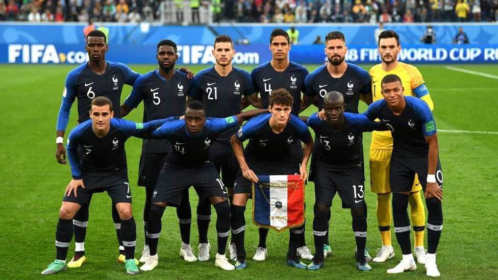
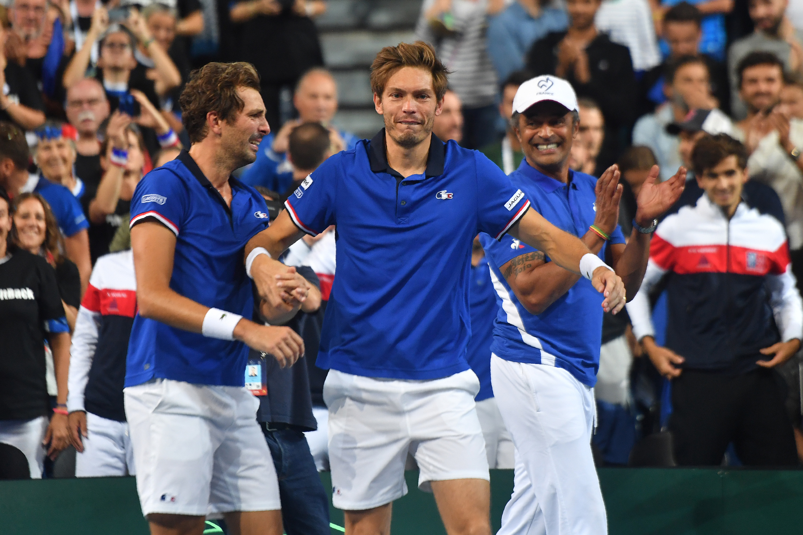
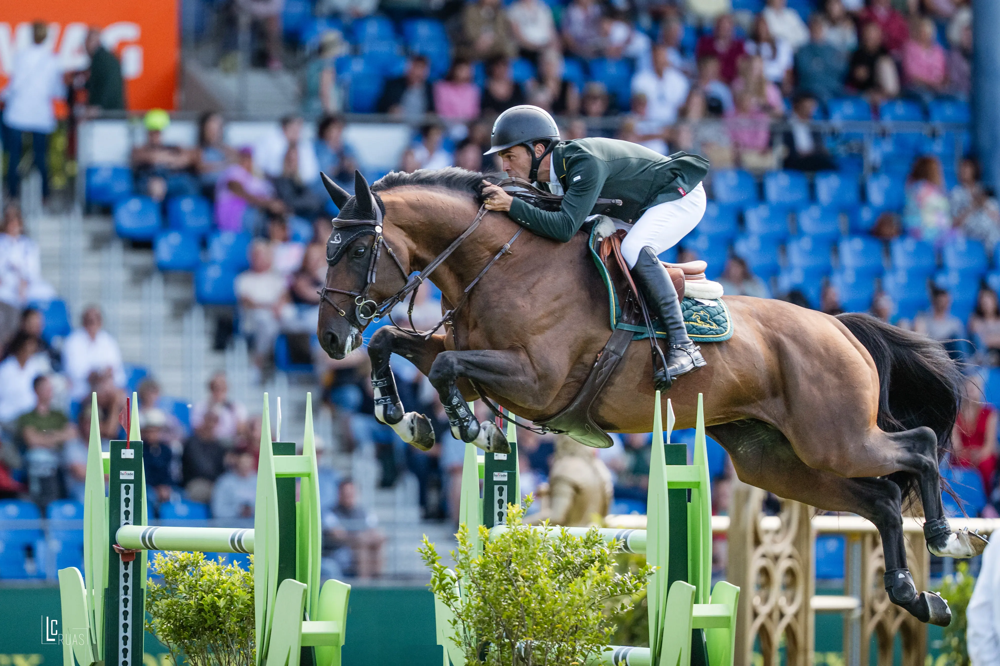

Os três esportes mais populares e influentes na França, considerando tanto a prática quanto o impacto cultural, são:
O futebol na França é gerido pela Federação Francesa de Futebol (FFF) e destaca-se globalmente pela força de sua seleção nacional, bicampeã mundial (1998 e 2018), e pelo domínio do Paris Saint-Germain (PSG) na primeira divisão profissional, a Ligue 1. Caracterizado por revelar talentos técnicos e atléticos de origem multicultural em suas ligas de base, o país divide suas atenções entre o gigantismo financeiro da capital e a tradição de clubes históricos como Olympique de Marseille, Saint-Étienne e Lyon.

O tênis na França é um dos esportes mais tradicionais e populares do país, com raízes históricas que remetem ao jogo medieval jeu de paume. Hoje, a nação destaca-se globalmente por sediar o prestigiado torneio de Roland Garros e o Masters 1000 de Paris, além de possuir uma renomada metodologia de ensino que atrai milhões de praticantes e formou grandes ícones do esporte, como Yannick Noah e Amélie Mauresmo.

O hipismo é extremamente popular e culturalmente enraizado na França, sendo o terceiro esporte olímpico mais praticado e o principal esporte feminino. Com fortes tradições de elite e alto desempenho, a França se destaca com competições como o Saut Hermès em Paris, além de ser o lar do Cadre Noir em Saumur, considerado a capital equestre do país.
